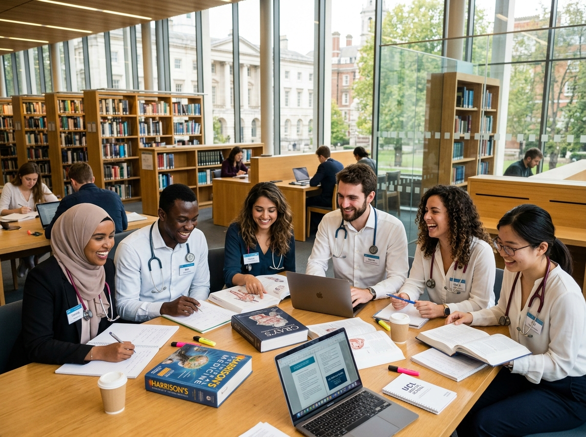

Poland has emerged as the most popular European MBBS destination for Indian, Pakistani, and Nepali students. With 13 NMC-approved medical universities, English-medium programs, and a welcoming student community, Poland offers the perfect combination of quality, affordability, and international recognition.
In this comprehensive guide, we cover everything you need to know about studying MBBS in Poland in 2025 — from eligibility and fees to visa, universities, and what student life is really like.
Why Choose Poland for MBBS?
Poland consistently ranks as the #1 MBBS destination in Europe for Indian students. Here's why:
- 13 NMC-approved medical universities with English-medium programs
- WHO and ECFMG recognised degrees accepted globally for licensing
- Affordable annual tuition: €6,000 – €8,000/year
- Low cost of living: €500–€700/month in cities like Kraków and Wroclaw
- Large South Asian student community — you'll never feel alone
- Safe, welcoming country with excellent public transport
- Strong clinical training from year 3 in modern university hospitals
Top NMC-Approved Medical Universities in Poland
Poland has 13 medical universities listed in the NMC's approved list. Here are the most popular among Indian students:
| University | City | Annual Fees | NMC |
|---|---|---|---|
| Jagiellonian University Medical College | Kraków | €9,500 | ✅ Yes |
| Medical University of Warsaw | Warsaw | €8,500 | ✅ Yes |
| Wroclaw Medical University | Wroclaw | €8,000 | ✅ Yes |
| Poznan University of Medical Sciences | Poznań | €7,500 | ✅ Yes |
| Medical University of Gdańsk | Gdańsk | €7,000 | ✅ Yes |
| Medical University of Silesia | Katowice | €6,000 | ✅ Yes |
Fees & Cost of Living in Poland
One of the biggest advantages of studying MBBS in Poland is the significant cost saving compared to private medical colleges in India and other European countries.
| Expense | Cost |
|---|---|
| Annual Tuition Fee | €6,000 – €9,500/year |
| Accommodation | €200 – €400/month |
| Food | €150 – €250/month |
| Transport | €30 – €50/month |
| Miscellaneous | €100 – €200/month |
| Total Monthly Living | €480 – €900/month |
| Estimated 6yr Total | €75,000 – €100,000 |
Eligibility Criteria for MBBS in Poland
Before applying, make sure you meet these eligibility requirements:
- Completed 10+2 with Physics, Chemistry and Biology
- Minimum 50% aggregate marks in PCB (60% for unreserved/general category Indian students)
- NEET qualification is compulsory for Indian students (NMC rules 2021)
- Age: Minimum 17 years at time of admission
- English proficiency: IELTS 6.0+ or school English medium certificate
Admission Process — Step by Step
Here's exactly how to apply for MBBS in Poland through EuroMedStudy:
- Free Counselling: Contact us and we'll assess your profile and recommend the best Polish university for you.
- Document Preparation: We help you gather and certify all required documents.
- Application Submission: We submit your application to the university on your behalf.
- Offer Letter: Receive your admission offer within 3–5 weeks.
- Visa Application: We guide you through the Polish student visa process.
- Arrival & Enrollment: Our Poland-based team helps you settle in on arrival.
"I got into Jagiellonian University with EuroMedStudy's help in just 4 months from first enquiry to visa approval. Their support was incredible every step of the way." — Riya Sharma, MBBS 3rd Year, Poland
Visa Process for Poland
Indian, Pakistani, and Nepali students require a Polish National Visa (Type D) for study purposes. Key requirements include:
- Valid passport (minimum 3 years validity)
- University admission letter / offer letter
- Proof of tuition fee payment
- Proof of accommodation in Poland
- Bank statement showing financial capacity
- Health insurance valid in Poland
Visa processing takes approximately 4–6 weeks. EuroMedStudy's visa team has a 95% success rate and will guide you through every step.
Student Life in Poland
Life in Poland for international medical students is vibrant, affordable, and welcoming. Cities like Kraków, Wroclaw, Warsaw, and Poznań have large South Asian communities, Indian restaurants, and active student associations.
- 🕌 Multiple Indian restaurants and South Asian grocery stores in all major cities
- 🎭 Rich cultural experiences — historic cities, music festivals and museums
- ✈️ Easy travel to other European countries on weekends
- 🏥 Excellent public healthcare for students
- 🌡️ Cold winters (down to -10°C) — but well-heated university buildings and dormitories
After MBBS — Career Opportunities
A Polish medical degree opens doors worldwide:
- India: Clear FMGE (Foreign Medical Graduate Examination) to register with NMC
- Pakistan: Clear PMDC screening test
- UK: Clear PLAB 1 & 2 for GMC registration
- USA: Take USMLE Step 1, 2 & 3 for residency applications
- EU/Europe: Register in any EU country and practice within the EU
Conclusion — Is MBBS in Poland Worth It?
Absolutely. Poland offers one of the best value-for-money MBBS education in Europe, with NMC recognition, English-medium programs, and a supportive environment for international students. If you want a globally recognised medical degree without paying ₹1–2 crore in India, Poland is one of the smartest choices in 2025.
Ready to begin? Book your free counselling session with EuroMedStudy today and get personalised guidance on your MBBS in Poland journey.
Dr. Amit Sharma is a senior medical education counsellor with over 12 years of experience guiding students from India, Pakistan and Nepal to medical universities in Europe. He has personally helped over 2,000 students achieve their dream of becoming doctors.